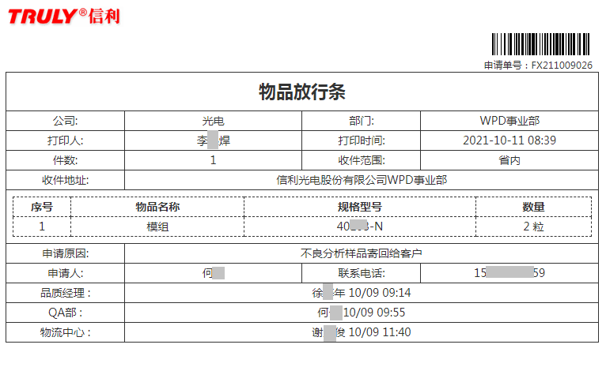

信利放行条操作指引
文档作者：赖吉全
创建日期：2021年10月06日
更新日期：2021年10月11日
当前版本：V2.0Bate
更新人员：赖吉全
一、系统介绍
本次放行条系统是根据目前公司整个放行情况进行系统及流程的整合、优化和迭代。全部52个流程，涉及公司各个方面的放行出厂业务，而这次的系统做到了统一的申请入口，统一的审批入口，统一的记录查询入口；同时系统使用三种创新的申请方式简化了大家放行业务发生时申请的复杂度。让大家有好的使用体验的同时也提高公司放行效率。
二、系统路径
企业微信 — 工作台 — 信利移动办公平台


1).方式一："通过引导式对话框对话框选择业务类型"
这种方式用通俗点说法就是由系统手把手引导你的整个申请，只要跟随系统一步一步的引导做出
相应的选择和补充必要信息，最后系统会根据你所选择及补充的信息产生对应的申请表，进行审批流转。
2).方式二："通过搜索对话框选择业务类型"
这种方式就是通过输入相关的字眼进行流程选择，当然输入的信息全则系统帮你搜索的定位就越精准，类似平时上网搜索功能。
3).方式三："通过业务类型树状图选择"
这种方式适用于对放行业务比较熟悉的人员，直接从大流程图里面点击进入申请表单填写并提交。此方式能快速定位申请流程。
三、术语解释
1). 非自提：
1.1 由公司授权部门（比如物流中心、仓库等）委托运输公司（包括但不限于货运、快递）出厂业
务。
1.2 非自提业务需要打印纸质放行条。具体打印环节在业务流程说明里面有明确指出。
2). 自提：
2.1 不走公司授权部门直接出厂；比如公司员工自己(包括托付其他员工)带出厂，供应商/加工商/委
外商、客户、工程队、第三方人员/机构等来访人员带出厂。
2.2 自提的放行条一定要拍物品照片。
2.3 自提的放行条全部使用电子版动态二维码，每次生成时效30分钟，过期刷新，出厂时请用有
效期内的二维码给信利门卫扫一扫。信放行条系统纸质放行条样本和电子二维码放行条样本如下：
2.3.1 打印纸质放行条样本

2.3.2 电子版二维码放行条样本

3). 研发样品：
指信利研发部范畴所研发出来的各种样品。包括但不限于图纸、参数、工艺、半成品、成品。
4). 非研发样品：
指信利非研发部范畴所提供的各种样品，包括提供颜色调色样本等。
5). 门卫放行：
指提供有效合法的放行条（纸质、二维条码）给门卫进行单与实物的核对；
电子版放行条门卫仅需要使用企业微信“信利扫一扫”进行二维码扫描核对。
经门卫核对和检验合法合规后放行出厂的整套业务。
四、申请思路

1 什么方式出厂
确定是用"自提"的方式通过门卫检查出厂还是通过"非自提"通过门卫检查出厂。
2 货物归属
确定需要出厂的物品，最终的归属（比如供应商、客户、集团内子公司/部门、委外加工商、还是公司
固定资产出厂）。
3 什么物品
1）退货：来料不良退回
2）样品：需要提供样品给供应商、客户、加工商。
3）回收品： 包材、容器、纸皮、空桶、借用模具、夹具、测试、试用等物品。
4） 委外物品：提供给委外加工商的各种货物。
5）文件：包括但不限于合同、协议、说明书、采购需求单、确认书、回签书等。
6）固定资产：包括但不限于生产设备、办公用品、办公设备、劳保用品、配件、模具、夹具等各种资
产。
7）集团内货物:集团内各公司、部门间生产材料、半成品、成品、辅料、办公、劳保等物品。
8）其他类：除罗列的类型外
4 有何要求
1）退货：
<1>.来料已入库无论是否领料均由仓库退回不良。
<2>.供应商物料使用寄件方式到物流中心者，未入库则由物流中心退回来料不良品，
已入库则走<1>流程。
<3>.需走物流中心寄来料不良回供应商，加工商业务
<4>.从研发仓退来料不良品需会知采购部。
2）公司产品：
只能申请不走K3出货流程的业务（包括换货或特殊出货），正常出货不允许申请，走K3出货流程。
3）样品：
<1>.无论是寄供应商、委外加工商、客户，均严格区分是否是研发样品还是非研发样品。
<2>.寄给客户信利研发样品，需要数量管控和多级审核。
4）回收品：
<1>.回收品区分"空桶"、"包材纸箱"、"设备配件"。
<2>.设备配件：指供应商或客户借给信利因某种工艺，生产需求的各种模具、夹具、测试物
品、试验物品、试用物品
5）委外物品：
提供给委外加工商的各种货物但无法在K3单据体现，需手工申请各种配套料、客供料、夹具、
模具等。
6）文件：
书面纸质物品。非纸质均不允许走此流程。
7）固定资产：
<1>生产设备及配件 ： 指包括但不限于生产设备、配件维修、外卖、转厂、报废、闲置、更换出
厂业务。
<2>非生产设备及配件：除生产设备、配件外的各种办公用品、办公设备、劳保用品、配件、模
具、夹具等出厂维修、外卖、转厂、报废、闲置、更换业务。
<3>报废公司固定资产：指除生产设备、配件外其他资产报废业务；
生产设备及配件报废走<1>流程。
8）集团内货物:
1）购销件：指集团内部各公司/部门间买卖货物出厂。
2）普通件：指集团内部各公司/部门内部或之间没有买卖的物品非自提出厂。
（比如同部门货物调拨、借用）
3）同市普通件：指集团内部各公司/部门内部或之间没有买卖的物品出厂,但收货方是信利二厂区、
信利红草厂区。
4）异市普通件：指集团内部各公司/部门内部或之间没有买卖的物品出厂,但收货方是信利惠州厂
区、信利四川仁寿厂区。
9）其他类：除罗列的类型外
五、系统操作技巧
1.操作指引使用
操作指引有相应的书签，可以方便的定位到相应的地方。

2.通过引导式对话框选择业务类型

这种方式按照第四点“申请思路”，根据系统向导一步一步申请。


3 .通过搜索对话框选择业务类型

下面以一个例子介绍此功能
例:
信利员工张三接到任务，把三个月前借用A客户的模具到公司物流中心寄还回去。
这时张三进入放行条系统后，使用了第二种搜索对话框方式进行申请表填写，首先在搜索框里
输入“模具”关键字进行搜索，
此时看到系统匹配了相关模具的流程；
张三通过申请思路进行确认：
（1）什么方式出厂：到公司物流中心邮寄，即“非自提"。
（2）货物归属：借用客户的，现在要归还，则应该选择“客户方向”。
（3） 什么物品：模具
（4）有何要求：非自提需要打印纸质放行条到物流中心办理业务。
从思路分析已经可以选择出红框非自提类型，寄给客户选择第二条流程，直接点击既然表单申
请。


4.通过业务类型树状图选择

这个方式是整体流程图方式，方便对业务熟悉人员快速进入，比如像2的例子，若张三比较熟悉业务，知道寄模具还给客户在"非自提"—"寄给客户"—"寄回收品"，那么通过这个方式直接点击流程图相应位置就能直接进入申请表单。

六、业务流程说明
（1）非自提类
（1.1）寄供应商方向
（1.1.1）退货
（1.1.1.1）从仓库/车间退回
业务场景说明：
供应商来料已经到信利仓库或被工序已经领料后发现不良，需要通过公司物流
中心委托第三方运输公司退回供应商的业务。
仓管部审核该流程后，申请人需要打印纸质放行条到物流中心办理托运业务。
流程节点：
提交 >>> 品质部 >>> 部门负责人 >>> 采购部 >>>仓库管理部 >>> 物流中心
>>> 门卫放行
（1.1.1.2）从物流（未入库）退回
业务场景说明：
不经仓库，通过公司物流部委托第三方运输公司，把不良来料退回供应商业
务。
部门负责人审核该流程后，申请人需要打印纸质放行条到物流中心办理托运业
务。
流程节点：
提交 >>> 部门负责人>>> 采购部 >>> 物流中心 >>> 门卫放行
（1.1.1.3）从研发仓退回
业务场景说明：
研发仓通过公司物流中心委托第三方运输公司，把不良来料退回供应商业务。
采购部审核该流程后，申请人需要打印纸质放行条到物流中心办理托运业务。
流程节点：
提交 >>> 项目经理 >>> 采购部 >>> 物流中心 >>> 门卫放行
（1.1.2）寄样品
（1.1.2.1）研发
业务场景说明：
研发部通过公司物流部委托第三方运输公司提供研发样品给供应商；
仓库管理部审核该流程后，申请人需要打印纸质放行条到物流中心办理托运业
务。
流程节点：
提交 >>> 项目经理 >>> 部门负责人 >>> 采购部 >>> 仓库管理部 >> > 物流中心
>>> 门卫放行
（1.1.2.2）非研发
业务场景说明：
除研发部外其他部门通过公司物流部委托第三方运输公司提供研发样品寄给供应
商；
部门负责人审核该流程后，申请人需要打印纸质放行条到物流中心办理托运业
务。
流程节点：
提交 >>> 部门负责人 >>> 物流中心 >>> 门卫放行
（1.1.3）寄回收品
（1.1.3.1）空桶类
业务场景说明：
通过公司物流部委托第三方运输公司把空桶寄还给供应商；
仓库管理部审批后，申请人需要打印纸质放行条到物流中心办理托运业务。
流程节点：
提交 >>> 部门负责人 >>> 采购部 >>> 仓库管理部 >>> 物流中心 >>> 门卫放行
（1.1.3.2）包材纸箱等其他类
业务场景说明：
通过公司物流部委托第三方运输公司把包材纸箱等寄还给供应商；
采购部审批后，申请人需要打印纸质放行条到物流中心办理托运业务。
流程节点：
提交 >>> 部门负责人 >>> 采购部 >>> 物流中心 >>> 门卫放行
（1.1.3.3）设备配件类
业务场景说明：
通过公司物流部委托第三方运输公司把借用的模具、夹具、测试物品、试验物
品、试用物品等寄还给供应商；
行政部审批后，申请人需要打印纸质放行条到物流中心办理托运业务。
流程节点：
提交 >>> 部门负责人 >>> 行政部 >>> 物流中心 >>> 门卫放行
（1.1.4）寄文件
业务场景说明：
通过公司物流部委托第三方运输、快递公司寄文件给供应商，包括但不限于合
同、协议、说明书、采购需求单、确认书、回签书等业务；
部门负责人审批后，申请人需要打印纸质放行条到物流中心办理托运业务。
流程节点：
提交 >>> 部门负责人 >>> 物流中心 >>> 门卫放行
（1.2）寄客户方向
（1.2.1）寄公司产品
业务场景说明：
通过公司物流部委托第三方运输公司寄不走K3出货流程的产品给客户，包括换货
或特殊出货；
QA部审批后，申请人需要打印纸质放行条到物流中心办理托运业务。
流程节点：
提交 >>> 部门负责人 >>> QA部 >>> 物流中心 >>> 门卫放行
（1.2.2）寄样品
（1.2.2.1）非研发类样品
业务场景说明：
事业部通过公司物流部委托第三方运输公司寄样品给客户；
QA部审批后，申请人需要打印纸质放行条到物流中心办理托运业务。
流程节点：
提交 >>> 品质经理 >>> QA部 >>> 物流中心 >>> 门卫放行
（1.2.2.2）研发类样品
（1.2.2.2.1）样品数量小于50
业务场景说明：
研发部通过公司物流部委托第三方运输公司寄样品给客户且寄出总样品
数量少于50；
研发项目经理审批后，申请人需要打印纸质放行条到物流中心办理托运业务。
流程节点：
提交 >>> 部门负责人 >>> 项目经理 >>> 物流中心 >>> 门卫放行
（1.2.2.2.1）样品数量50以上
业务场景说明：
研发部通过公司物流部委托第三方运输公司寄样品给客户且寄出总样品数量大于
或等于50；
研发最高负责人审批后，申请人需要打印纸质放行条到物流中心办理托运业务。
流程节点：
提交 >>> 部门负责人 >>> 项目经理 >>> 研发最高负责人 >>> 物流中心
>>> 门卫放行
（1.2.3）寄文件
业务场景说明：
通过公司物流部委托第三方运输、快递公司寄给客户文件，包括但不限于合同、
协议、说明书、确认书、回签书等业务；
部门负责人审批后，申请人需要打印纸质放行条到物流中心办理托运业务。
流程节点：
提交 >>> 部门负责人 >>> 物流中心 >>> 门卫放行
（1.2.4）寄回收品
业务场景说明：
通过公司物流部委托第三方运输公司寄回借用客户的设备，包括但不限于夹具、
模具等物品业务；
行政部审批后，申请人需要打印纸质放行条到物流中心办理托运业务。
流程节点：
提交 >>> 部门负责人 >>> 行政部 >>> 物流中心 >>> 门卫放行
（1.2.5）寄其它
业务场景说明：
通过公司物流部委托第三方运输公司寄给客户其他物品；
行政部审批后，申请人需要打印纸质放行条到物流中心办理托运业务。
流程节点：
提交 >>> 部门负责人 >>> 行政部 >>> 物流中心 >>> 门卫放行
（1.3）寄集团内方向
（1.3.1）寄货物
（1.3.1.1）购销件
业务场景说明：
通过公司物流部委托第三方运输公司邮寄、托运集团内各公司部门间因购销关系
的货物；
部门负责人审批后，申请人需要打印纸质放行条到物流中心办理托运业务。
流程节点：
提交 >>> 部门负责人 >>> 物流中心 >>> 门卫放行
（1.3.1.2）普通件
业务场景说明：
通过公司物流部委托第三方运输公司邮寄、托运集团内各公司部门间非购销关系
的货物；
部门负责人审批后，申请人需要打印纸质放行条到物流中心办理托运业务。
流程节点：
提交 >>> 部门负责人 >>> 物流中心 >>> 门卫放行
（1.3.2）文件
业务场景说明：
通过公司物流部委托第三方运输、快递公司邮寄集团内各公司间文件服务;
部门负责人审批后，申请人需要打印纸质放行条到物流中心办理托运业务。
流程节点：
提交 > 部门负责人 > 物流中心 > 门卫放行
（1.4）寄委外加工商方向
（1.4.1）寄委外物品
业务场景说明：
通过公司物流部委托第三方运输公司邮寄、托运无法在K3单据体现的委外业务，
需手工申请的各种配套料和客供料、夹具、模具等；
营运部审批后，申请人需要打印纸质放行条到物流中心办理托运业务。
流程节点：
提交 > 部门负责人 > 营运部 > 物流中心 > 门卫放行
（1.4.2）寄委外回收品
业务场景说明：
通过公司物流部委托第三方运输公司邮寄、托运送货带来的包材或容器还给委外
加工商；
营运部审批后，申请人需要打印纸质放行条到物流中心办理托运业务。
流程节点：
提交 > 部门负责人 > 营运部 > 老物流 > 门卫放行
（1.5）寄固定资产方向
（1.5.1）生产设备及配件类
（1.5.1.1）设备类
业务场景说明：
通过公司物流部委托第三方运输公司，运输包括但不限于生产设备出厂维修、外
卖、转厂、报废、闲置、更换等业务；
设备部总经理审批后，申请人需要打印纸质放行条到物流中心办理托运业务。
流程节点：
提交 > 部门负责人 > 设备部 > 设备部总经理 > 物流中心 > 门卫放行
（1.5.1.2） 配件类
业务场景说明：
通过公司物流部委托第三方运输公司，运输包括但不限于生产设备的配件出厂
维修、外卖、转厂、报废、闲置、更换等业务；
设备部总经理审批后，申请人需要打印纸质放行条到物流中心办理托运业务。
流程节点：
提交 > 部门负责人 > 设备部 > 设备部总经理 > 物流中心 > 门卫放行
（1.5.2）非生产设备或配件
业务场景说明：
通过公司物流部委托第三方运输公司，运输除生产设备、配件外的各种包括但不
限于办公设备用品，劳保用品、配件、模具、夹具等转厂出厂、维修出厂、保养
出厂、报废出厂等业务；
行政部审批后，申请人需要打印纸质放行条到物流中心办理托运业务。
流程节点：
提交 > 部门负责人 > 行政部 > 物流中心 > 门卫放行
（1.5.3） 资产报废物品
业务场景说明：
通过公司物流部委托第三方运输公司，运输公司某些资产出厂报废
外卖等业务；
行政部审批后，申请人需要打印纸质放行条到物流中心办理托运业务。
流程节点：
提交 > 部门负责人 > 总裁办 > 行政部 > 物流中心 > 门卫放行
（1.6）其它类
业务场景说明：
通过公司物流部委托第三方运输公司，运输其他类出厂业务；
营运部审批后，申请人需要打印纸质放行条到物流中心办理托运业务。
流程节点：
提交 > 部门负责人 > 营运部 > 物流中心 > 门卫放行
（2）自提类
（2.1）供应商物品
（2.1.1）退货
（2.1.1.1）从仓库/车间退回
业务场景说明：
供应商来料已经到信利仓库或被工序已经领料后发现不良，需要自提出厂退
回业务。
流程节点：
提交>>>品质部>>>部门负责人>>>采购部>>>仓库管理部>>>门卫放行
（2.1.1.2）从物流（未入库）退回
业务场景说明：
不经仓库，到公司物流部自提出厂业务。
流程节点：
提交>>>部门负责人>>>采购部>>>物流中心>>>门卫放行
（2.1.1.3）从研发仓退回
业务场景说明：
到公司研发仓自提不良来料退回业务。
流程节点：
提交>>>项目经理>>>采购部>>>门卫放行
（2.1.2）样品
（2.1.2.1）研发
业务场景说明：
自提研发样品(信利研发仓、研发部或属于研发管辖的样品）出厂给
供应商。
流程节点：
提交>>>项目经理>>>部门负责人>>>采购部>>>仓库管理部>>>门卫放行
（2.1.2.1）非研发
业务场景说明：
自提非研发管辖样品（包括但不限于提供样品给供应商调色）出厂给
供应商。
流程节点：
提交>>>部门负责人>>>门卫放行
（2.1.3）回收品
（2.1.3.1）空桶类
业务场景说明：
到公司仓库自提空桶业务。
流程节点：
提交>>>部门负责人>>>采购部>>>仓库管理部>>>老物流>>>门卫放行
（2.1.3.2）包材纸箱等其他类
业务场景说明：
到公司老物流自提纸皮箱、包装容器等业务。
流程节点：
提交>>>部门负责人>>>采购部>>>老物流>>>门卫放行
（2.1.3.3）设备配件类
业务场景说明：
自提借给信利用的模具、夹具、测试物品、试验物品、试用物品等。
流程节点：
提交>>>部门负责人>>>行政部>>>门卫放行
（2.1.3）文件
业务场景说明：
自提给供应商的文件，包括但不限于合同、协议、说明书、采购需求单、
确认书、回签书等。
流程节点：
提交>>>部门负责人>>>门卫放行
（2.2）客户
（2.2.1）公司产品
业务场景说明：
自提没有走K3出货流程的产品给客户，包括换货或特殊出货业务。
流程节点：
提交>>>部门负责人>>>QA部>>>门卫放行
（2.2.2）样品
（2.2.2.1）非研发类样品
业务场景说明：
自提事业部非研发范畴样品给客户
流程节点：
提交>>>品质经理>>>QA部>>>门卫放行
（2.2.2.2）研发类样品
（2.2.2.2.1）样品数量小于50
业务场景说明：
自提研发部数量少于50的研发类样品给客户。
流程节点：
提交>>>部门负责人>>>项目经理>>>门卫放行
（2.2.2.2.2）样品数量50以上
业务场景说明：
自提研发部数量等于或大于50的研发类样品给客户。
流程节点：
提交>>>部门负责人>>>项目经理>>>研发最高负责人>>>门卫放行
（2.2.3）文件
业务场景说明：
自提客户文件，包括但不限于合同、协议、说明书、确认书、
回签书等出厂。
流程节点：
提交>>>部门负责人>>>门卫放行
（2.2.4）回收品
业务场景说明：
自提借用的客户设备（包括但不限于夹具、模具等物品）出厂。
流程节点：
提交>>>部门负责人>>>行政部>>>门卫放行
（2.2.5）其它
业务场景说明：
自提客户其他类型的物品出厂。
流程节点：
提交>>>部门负责人>>>行政部>>>门卫放行
（2.3）集团内
（2.3.1）货物
（2.3.1.1）购销件
业务场景说明：
自提集团内各公司部门间因购销关系的货物。
流程节点：
提交>>>部门负责人>>>门卫放行
（2.3.1.2）异市普通件
业务场景说明：
自提不同城市的集团内各公司部门间除了购销关系的货物，适用以下
（汕尾信利 — 惠州信利 / 汕尾信利 — 仁寿信利 /
汕尾信利 — 香港信利 / 汕尾信利 — 信利各地办事处）。
流程节点：
提交>>>部门负责人>>>门卫放行
（2.3.1.3）同市普通件
业务场景说明：
自提同一城市的集团内各公司部门间除了购销关系的货物
（适用于同一个城市不同厂区间货物运输）。
流程节点：
提交>>>部门负责人>>>门卫放行
（2.3.1）文件
业务场景说明：
自带文件出厂给集团内各公司部门。
流程节点：
提交>>>部门负责人>>>门卫放行
（2.4）委外加工商
（2.4.1）委外物品
业务场景说明：
自提无法在K3单据体现的委外业务，需手工申请的各种配套料和客供料、
夹具、模具等出厂委外加工业务。
流程节点：
提交>>>部门负责人>>>营运部>>>老物流>>>门卫放行
（2.4.1）委外回收品
业务场景说明：
自提回收因委外入库所附带的各种包装材料、容器等物品出厂。
流程节点：
提交>>>部门负责人>>>营运部>>>老物流>>>门卫放行
（2.5）固定资产
（2.5.1）生产设备及配件类
（2.5.1.1） 设备类
业务场景说明：
自提包括但不限于生产设备因维修、外卖、转厂、报废、闲置、
更换等出厂业务。
流程节点：
提交>>>部门负责人>>>设备部>>>设备部总经理>>>门卫放行
（2.5.1.1） 配件类
业务场景说明：
自提包括但不限于生产设备的配件维修、外卖、转厂、报废、闲置、
更换等出厂业务。
流程节点：
提交>>>部门负责人>>>设备部>>>设备部总经理>>>门卫放行
（2.5.2）非生产设备或配件
业务场景说明：
自提除生产设备、配件外的各种包括但不限于办公设备用品，劳保用品、
配件、模具、夹具等转厂出厂、维修出厂、保养出厂、报废出厂等业务。
流程节点：
提交>>>部门负责人>>>行政部>>>物流中心>>>门卫放行
（2.5.3）资产报废物品
业务场景说明：
自提公司某些资产出厂报废外卖等业务。
流程节点：
提交>>>部门负责人>>>总裁办>>>行政部>>>门卫放行
（2.6）其它类
业务场景说明：
自提公司其他类出厂业务。
流程节点：
提交>>>部门负责人>>>营运部>>>门卫放行